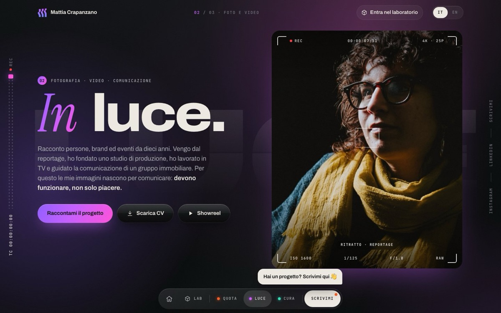
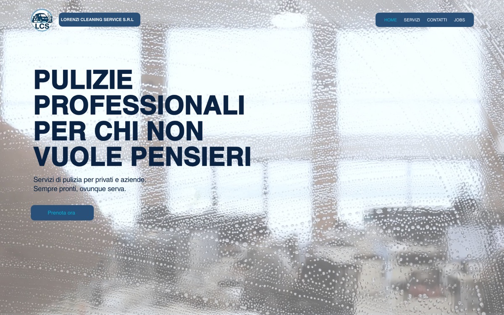
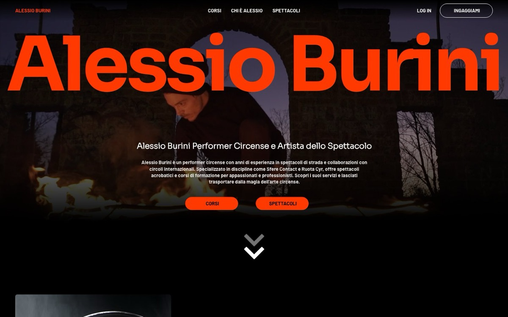
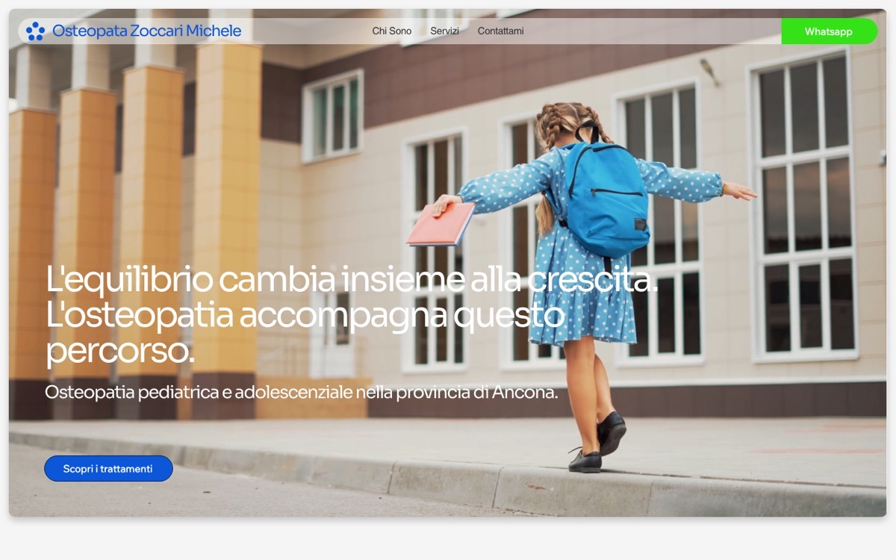
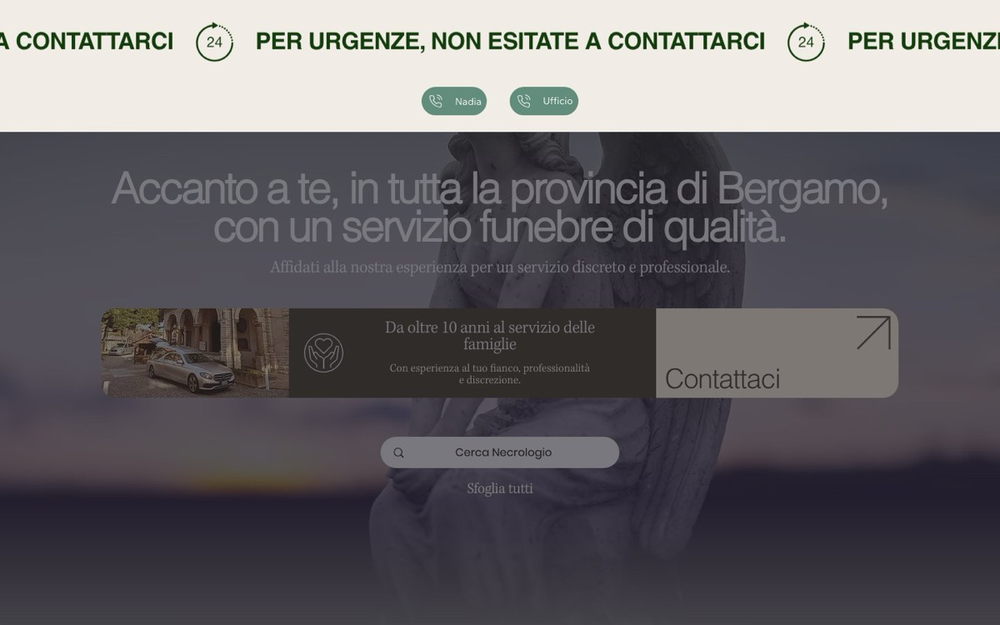
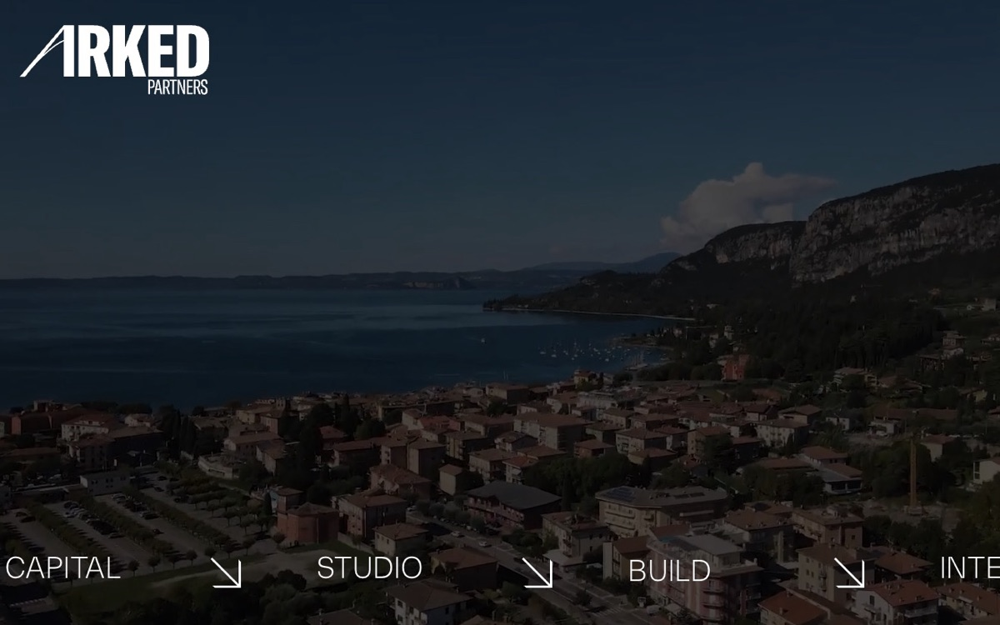

Progetto e testi
Capisco cosa vendi e a chi. Scrivo struttura e testi pensando a chi ti cerca.
02 In luce · Siti web
Progetto, costruisco e metto online siti per professionisti e piccole aziende. Poi resto: li tengo aggiornati, sicuri e in regola, mese dopo mese.

Un sito è il posto dove ti cercano. Deve dire chi sei in pochi secondi, farsi trovare e restare in regola nel tempo.
Capisco cosa vendi e a chi. Scrivo struttura e testi pensando a chi ti cerca.
Un sito che somiglia a te, non a un modello preso da un catalogo. Funziona bene anche dal telefono.
Alla parte tecnica penso io. Il dominio è intestato a te, e ti creo un’email dedicata che tiene insieme tutto quello che costruisco per te online.
Titoli, descrizioni e dati strutturati per Google e per gli assistenti come ChatGPT, Gemini e Claude.
Informativa privacy, cookie, note legali e partita IVA in home, come chiede la legge.
Aggiornamenti, controlli e modifiche dopo la messa online, con un canone fisso.
La scegliamo insieme, in base a cosa ti serve e a chi aggiornerà il sito.
Sono Wix Partner, livello Creativo. È la scelta giusta se vuoi cambiare da solo testi e foto, da un pannello semplice. Quattro dei siti che trovi qui sotto sono fatti così.
È il metodo con cui ho costruito questo sito. L’intelligenza artificiale mi permette di creare un sito su misura in tempi brevi: niente modelli, niente plugin da aggiornare, pagine leggere che si aprono subito anche dal telefono. Ogni testo e ogni pagina li controllo io prima che vadano online.
Non solo una vetrina. Lo collego a quello che ti serve ogni giorno, così vendi, prenoti e rispondi da un posto solo.
Catalogo, carrello, pagamenti online e spedizioni. Vendi anche quando sei chiuso.
Appuntamenti e prenotazioni dal sito, con calendario e promemoria automatici ai clienti.
Moduli di contatto, iscrizioni e richieste di preventivo che ti arrivano ordinati via email.
Pagine riservate con documenti cifrati, come quella che uso con i miei clienti.
Articoli e novità che ti fanno trovare su Google, e una newsletter con iscrizione dal sito.
Scheda Google, mappa e recensioni collegate al sito, perché chi ti cerca in zona ti trovi.
Pulsanti per scriverti su WhatsApp, collegamenti ai profili e contenuti dai social.
Visite e risultati da leggere a colpo d’occhio, anche senza cookie, come su questo sito.
Pagine interattive e ambienti in 3D, come il laboratorio che trovi entrando in questo sito.
Usi già un gestionale o un servizio online? Verifico se si può collegare al sito.
La uso come una squadra: fa in minuti il lavoro manuale che richiederebbe giorni. Io decido, guido e controllo ogni passaggio, e rispondo io di quello che va online.
Questo sito ne è la prova: un laboratorio in 3D, due lingue, curriculum stampati in automatico, pagine legali generate dal codice e un’area clienti cifrata.
Un sito fermo invecchia. Le leggi su privacy e cookie si aggiornano, le piattaforme cambiano, i browser pure. E se il sito non è in regola, il rischio è di chi lo possiede.
Deve descrivere i dati che il sito raccoglie davvero, e cambiare quando cambia il sito: un modulo nuovo, una statistica, un pixel pubblicitario.
Valgono le linee guida del Garante Privacy: chiudere il banner deve voler dire rifiutare, e scorrere la pagina non vale come consenso.
L’European Accessibility Act chiede ai negozi online e a molti servizi digitali di essere usabili anche da chi ha una disabilità.
Chi ha la partita IVA deve indicarla nella home page del proprio sito.
In base al sito. Se lo paghi una volta l’anno, hai uno sconto.
Professionisti e piccole aziende, ognuno con il suo carattere.





Un sito rende di più se intorno c’è una comunicazione coerente. Dal 2025 al 2026 ho guidato quella di Arked Partners: identità visiva, social, produzione di contenuti e direzione foto e video.
Cosa dire, a chi e su quali canali, prima di produrre qualsiasi cosa.
Grafiche coerenti con il sito e un piano per pubblicare con costanza.
Pubblicità su Facebook, Instagram e Google, pensata per le persone che vuoi raggiungere davvero.
Le foto e i video li faccio io, con la stessa idea del sito. Guarda cosa faccio.
Capisco cosa ti serve, prima di parlare di prezzi.
Struttura del sito, strada da seguire (Wix o su misura) e preventivo scritto.
Scrivo i testi e raccolgo foto e loghi. Se servono foto nuove, le faccio io.
Vedi le pagine prima che vadano online, con le revisioni concordate nel preventivo.
Dominio, email, pagine legali e Google.
Canone mensile, oppure annuale con lo sconto.
Dipende da pagine, lingue e funzioni. Prima ci sentiamo in videochiamata, poi ti mando un preventivo scritto.
Tuoi. Il dominio è intestato a te, e ti creo un’email dedicata da cui passa tutto quello che costruisco per te online: sito, profili e campagne.
Sì: catalogo, carrello, pagamenti online e spedizioni. Ti consiglio la soluzione adatta a quanti prodotti hai e a come spedisci.
Su Wix sì, da un pannello semplice. Su un sito su misura le modifiche me le chiedi e le faccio io.
Sì, se è su Wix: prima lo controllo e lo metto in regola, poi lo tengo aggiornato con la manutenzione. Se è su un’altra piattaforma, valutiamo insieme se rifarlo su Wix o su misura.
Solo se il sito usa cookie non tecnici, per esempio pubblicità o statistiche che profilano. Su un sito su misura spesso si può evitare, come su questo.
Prima una videochiamata, poi un preventivo su misura. Rispondo io, di solito in giornata.